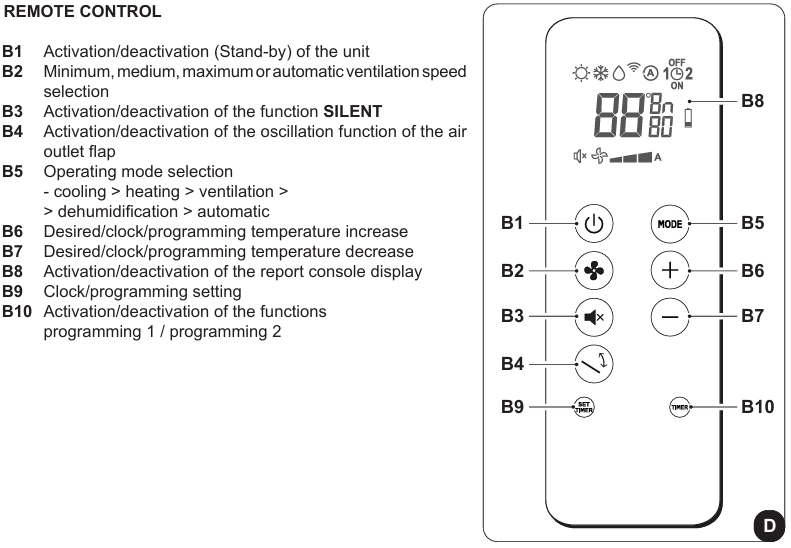
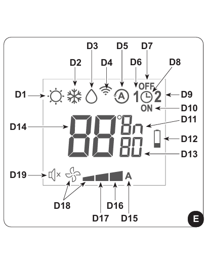
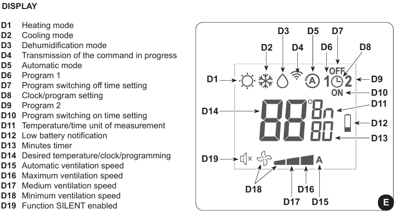

Air conditioner instructions
Using the remote control
- Handle with care, avoid getting it wet or dropping it.
- Do not expose to direct sunlight.
- Remove the batteries if not used for a prolonged period.
- Keep the remote control in a position where the signal can reach the receiver on the unit (maximum distance: 8 meters).
Remote control description


Signal panel and display description
- Green LED: Machine in operation.
- Yellow LED: Programming activation/deactivation.
- Green LED: Cooling compressor activated.
- Red LED: Air filter may need cleaning. 


Air conditioner functions
- Turning the unit On/Off: press the B1 button to activate or deactivate the air conditioner.
- Fan speed control: press the B2 button to change the fan speed: Low > Medium > High > Automatic.
- Automatic mode: automatically regulates temperature and fan speed based on the room temperature. Press the B5 button until the D5 symbol appears on the display.
- Dehumidification mode: Dehumidifies the environment. Press the B5 button until the D3 symbol and the minimum ventilation D18 symbol appear on the display.
- Ventilation mode: does not affect temperature or humidity. Press the B5 button until the minimum ventilation D18 symbol appears on the display.
- Heating mode: heats the environment. Press the B5 button until the D1 symbol appears on the display.
- Airflow direction control: press the B4 button to activate/deactivate the continuous oscillation of the air outlet deflector.
- SILENT function: gradually reduces fan speed for quieter operation. Press the B3 button to activate the SILENT function.
Energy saving Tips
- Keep the filters always clean.
- Close doors and windows during operation.
- Use curtains or blinds to block sunlight.
- Do not obstruct air flow paths.
Diagnostics and alarms
- LED A: air filter may need cleaning.
- LED B: high battery temperature.
- LED A + C flashing: continuous pump operation.
General Warnings
- Do not manually move the air outlet flap.
- If water leaks, turn off the unit immediately and unplug it.
If you encounter problems, contact the host, Alessandro.